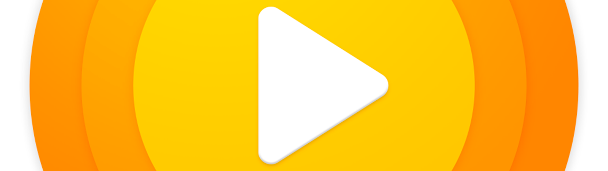

GoPlayer - Your Cloud Music Companion for iOS and MacOS
Introducing GoPlayer, your go-to music app for iOS and macOS, specially designed to seamlessly integrate with Google Drive. Experience a harmonious blend of convenience and audio excellence as you dive into a world of music.
1. Privacy:
GoPlayer respects your privacy. Our use and handling of data obtained from Google APIs adhere to Google API Services User Data Policy, including the Limited Use requirements. For more details, please review our Privacy Policy.
2. Universal Audio Support:
GoPlayer effortlessly handles a variety of audio formats, including MP3, FLAC, AAC, M4A, WAV, AIFF, and M4R. Play your favorite tunes, no matter the format.
3. Audio Equalizer with Bass Booster:
Fine-tune your music with precision using the built-in equalizer and bass booster. Customize your sound to match your mood and preferences.
4. Offline Mode:
Take your music with you wherever you go by downloading tracks for offline listening. Perfect for commutes, flights, or areas with limited connectivity.
5. Create Playlists:
Craft your own playlists with ease, making it simple to organize and enjoy your music collection.
6. Music Library:
Access your entire music library effortlessly, all neatly organized within GoPlayer's intuitive interface.
7. Audio Bookmarks:
Never lose your spot in a podcast or audiobook. Use audio bookmarks to resume right where you left off.
8. Playback Speed Control:
Tailor your listening experience by adjusting playback speed. Speed up or slow down your audio to match your preferences.
9. Sleep Timer:
Let your favorite tunes lull you to sleep with the handy sleep timer. Set it and relax as your music gently fades away.
10. Background Playback:
Keep the music flowing even while using other apps or when your device is locked. GoPlayer ensures uninterrupted tunes.
11. File Manager:
Stay organized with the integrated file manager, making it a breeze to manage and arrange your audio files.
12. Advanced Search:
Find exactly what you're looking for quickly and easily with the advanced search feature. Locate tracks, albums, or artists effortlessly.
GoPlayer streamlines your music experience on both iOS and macOS, providing a user-friendly interface, powerful features, and the convenience of cloud integration with Google Drive. It's your music, your way, wherever you are.
Unlock the harmonious blend of cloud convenience and audio brilliance with GoPlayer today. Enjoy your music like never before!